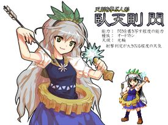

- Welcome to Touhou Wiki!
- Please register to edit. For assistance, check in with our Discord server or IRC channel.
Fan-made characters/Sen Gatensoku
Sen Gatensoku | |
|---|---|
|
 Illustration of Gatensoku Sen from pixiv The Doll Learning from the Natural LawsMore Character Titles | |
| Species | |
| Abilities |
Transcribing flashes of inspiration |
| Occupation |
Unknown |
| Location |
Unknown |
Appearances | |
| Miscellaneous Works | |
Sen Gatensoku (臥天則 閃 Gatensoku Sen) is a fan-made character created by the pixiv user called とってま (Tottema).
General Information[edit]
There is very little information on this character, but it's known that Tottema originally created Sen as the final boss of Touhou Hisoutensoku and that her original illustration mimics alphes's (along with a sprite of her mimicking the ones in Touhou Hisoutensoku). Tottema is not a VIPPER from 2ch.
Sen is associated with the weather type "Kourin (Halo)" and her effects are "Collision detection of shooting enlarges". For some reason, her original art has been deleted off pixiv.
Character Basis[edit]
Name[edit]
Her first name, Sen (閃), means "flash" and both the names 學天則 (Gakutensoku) and Sen's surname 臥天則 (Gatensoku) are very smaller with the kanji. The kanji 天 (ten) in both names means "Heaven" and 則 (soku) in both names means "Law". The kanji 學 (gaku) in Gakutensoku means "learning", "knowledge", or "school" and the Kanji 臥 (ga) in Gatensoku means, strangely, "lie down".
Design[edit]
Sen's design is based on Gakutensoku (學天則, lit. learning from natural law) who is the first robot of Japan. Sen has light brown eyes and long grey hair. She wears a blue dress with a white flower and short white sleeves, blue socks and brown shoes, and a laurel crown on her head with five green leaves. She has "the signal arrow-shaped pen" in her right hand, "the lamp of inspiration" (霊感灯) in her left hand, and a light brown gear around her waist which doesn't fit.
The similarities between Gakutensoku and Sen is that they both are robots, and both have a laurel crown on her head, "the signal arrow-shaped pen", and "the lamp of inspiration".
Official Profile[edit]
とってま description on Pixiv[edit]
<toggledisplay showtext="Show profiles" hidetext="Hide profiles">
</toggledisplay> [1]